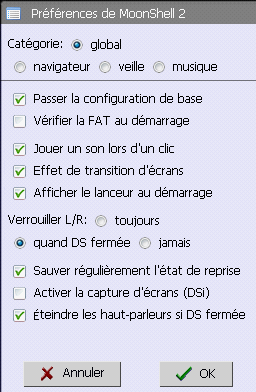
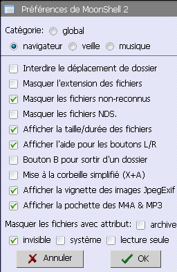
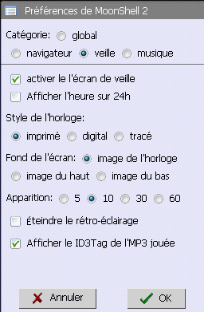
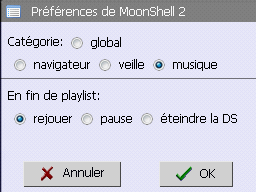
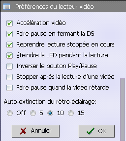
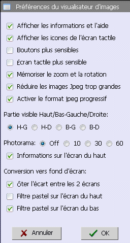
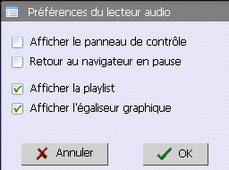
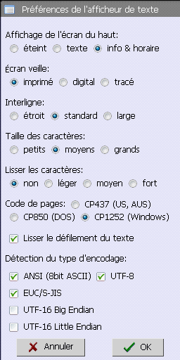

- Passer la configuration de base
- Vérifier la FAT au démarrage
Laissez cette case chochée si vous n'avez pas de raison particulière de désactiver la vérification du disque.
C'est plus sûr comme ça.
- Jouer un son lors d'un clic
- Effet de transition d'écran
- Afficher le lanceur au démarrage
Il est possible de lancer rapidement un des 5 derniers HomeBrews utilisés grâce à l'onglet historique du lanceur.
- Verrouiller L/R:
toujours, quand DS fermée, jamais
- Sauver régulièrement l'état de reprise
Permet de conserver le dernier état lors que la manipulation de musique, d'image ou de texte.
- Activer la capture d'écrans (DSi)
Sur DSi, le réglage du rétro-éclairage se fait en pressant un bouton du volume + SELECT. Cochez cette option seulement lorsque vous voulez faire une capture d'écran sur DSi
- Éteindre les haut-parleurs si DS fermée
Par défaut, les haut-parleurs continuent de jouer la musique même si l'on ferme la DS.
Si l'on coche cette option, le son des haut-parleurs se coupe en fermant la DS. Cependant, vous pourrez tout de même écouter la musique en branchant vos écouteurs.

- Interdire le déplacement de dossier
- Masquer l'extension des fichiers
- Masquer les fichiers non-reconnus
Permet de ne plus afficher les fichiers AVI, EXE, etc... dans le navigateur.
Attention, ce n'est pas parce que tous les WMA ou JPG sont affichés qu'ils sont tous compatibles.
- Masquer les fichiers NDS
- Afficher la taille/durée des fichiers
Seuls les informations des fichiers MP3, JPG, BMP, PSD et DPG s'affichent.
- Afficher l'aide pour les boutons L/R
Le descritif des combinaisons correspondant au bouton s'affiche en maintenant L/R pressé.
- Presser 3x R pour stopper la musique
Normalement, la musique stoppe en pressant B.
Si vous cochez cette case, la musique stoppera avec 3 pressions rapides sur R.
- Mise à la corbeille simplifiée (X+A)
Normalement pour supprimer un fichier, vous devez placer le curseur sur celui-ci puis presser START un certain temps. Dès lors, un message de confirmation apparaît. Pressez les boutons L+R+A pour jetter ce fichier mais si cette case est cochée, il suffira de presser X+A.
- Afficher la vignette des images JpegExif
- Afficher la pochette des M4A & MP3
- Masquer les fichiers avec attribut:
archive, invisible, système, lecture seule

- Activer le l'écran de veille
- Afficher l'heure sur 24h
- Style de l'horloge:
imprimé, digital, tracé
- Fond de l'écran:
image de l'horloge, image du haut, image du bas
- Apparition:
5, 10, 30, 60
Permet de choisir un interval d'inactivité nécessaire pour faire apparaître l'écran de veille (l'horloge).
- Éteindre le rétro-éclairage
La DS sera comme mise en veille.
- Afficher le ID3Tag de l'MP3 jouée
Permet d'afficher les informations contenues dans une MP3 sur l'écran du haut.

- En fin de playlist:
rejouer, pause, éteindre la DS

- Accélération vidéo
Lorsque cette case est chochée, l'accélération vidéo est activée mais avec des vidéos lourdes, il peut avoir une perte d'images par seconde.
- Faire pause en fermant la DS
- Reprendre lecture stoppée en cours
Lorsque cette case est chochée, les vidéos stoppée en cours reprendrons au même endroit lors de la prochaine lecture.
- Éteindre la LED pendant la lecture
- Inverser le bouton Play/Pause
Seule l'apparence du bouton change. Le fonctionnement reste le même.
- Stopper après la lecture d'une vidéo
Revient toujours au navigateur de fichiers quelque soit le mode de lecture (lecture dans l'ordre, lecture en boucle, etc...)
- Faire pause quand la vidéo retarde
- Auto-extinction du rétro-éclairage:
Off, 5, 10, 15
Extinction automatique du rétro-éclairage au bout de 5, 10 ou 15 seconde d'innactivé.

- Afficher les informations et l'aide
- Afficher les icones de l'écran tactile
- Boutons plus sensibles
- Écran tactile plus sensible
- Mémoriser le zoom et la rotation
- Réduire les images Jpeg trop grandes
- Activer le format jpeg progressif
Le décodage d'un fichier ProgressiveJpeg est très lent et il est impossible d'interrompre en cours d'affichage.
- Partie visible Haut/Bas-Gauche/Droite:
H-G, H-D, B-G, B-D
Partie visible d'une grande image à l'écran.
H-G = partie en haut à gauche, H-D = partie en haut à droite, B-G = partie en bas à gauche, B-D = partie en bas à droite.
- Photorama:
Off, 10, 30, 60
- Informations sur l'écran du haut
- Conversion vers fond d'écran:
Correspond aux paramètres de conversion lorsqu'on appuie sur Start pour convertir l'image affichée en fond d'écran.
- Ôter l'écart entre les 2 écrans
- Filtre pastel sur l'écran du haut
- Filtre pastel sur l'écran du bas

- Afficher le panneau de contrôle
Au lieu de jouer la musique dans le navigateur de fichiers lorsqu'on presse A, ça démarre aussi le lecteur audio.
- Retour au navigateur en pause
- Afficher la playlist
- Afficher l'égaliseur graphique

- Affichage de l'écran du haut:
éteint, texte, info & horaire
- Écran veille:
imprimé, digital, tracé
- Interligne:
étroit, standard, large
- Taille des caractères:
petits, moyens, grands
petits = 12pix, moyens = 14pix, grands = 16pix
- Lisser les caractères:
non, léger, moyen, fort
Si la taille des carectères n'est pas correcte, il y aura des problèmes d'affichage.
- Code de pages:
CP437 (US, AUS), CP850 (DOS), CP1252 (Windows)
Cette option est employée seulement dans le format ANSI.
- Lisser le défilement du texte
- Détection du type d'encodage:
ANSI (8bit ASCII), UTF-8, EUC/S-JIS, UTF-16 Big Endian, UTF-16 Little Endian
Veuillez charger uniquement des fichiers de texte correspondant au bon format.